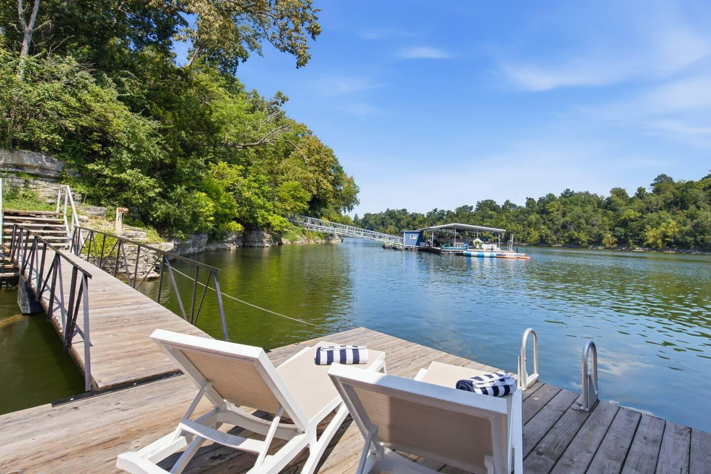

OUR HOMES

Home / Herrington Lake vacation rental
HARRODSBURG
Herrington Haven sits right on the water with a private dock, big lake views and room for 10.
THE AREA
Herrington Lake is one of Kentucky's deepest lakes, with limestone bluffs and quiet coves. Spend the day boating, fishing or swimming off your own dock, and the evening around the fire pit. Historic Harrodsburg and Shaker Village of Pleasant Hill are close by.
Herrington Haven is a three-story lake house right on the water, with a private dock and boat slip, a hot tub, a fire pit on the lawn and a game room with a pool table. It has 3 bedrooms and 3.5 baths and sleeps 10.
Bring the boat: Herrington Haven has its own slip at the private dock.
Right from your private dock.
Trails, farm-to-table dining and history.
Kentucky's oldest town.
Danville and Lawrenceburg distilleries within reach.
OUR HOMES
BEST FOR
Yes, a private dock with a boat slip and chaise lounges. The steps down to the dock are steep and narrow.
Yes, plus a fire pit on the lawn and a game room with a pool table.
Up to 10, with 3 bedrooms and 3.5 baths.
Within about an hour.
No. Herrington Haven is pet free.
Yes. Every home on this site has a live calendar and secure checkout, so you can book directly with us. Booking here is always cheaper than the same stay on Airbnb or Vrbo, and direct guests get a complimentary early check-in or late checkout of up to 2 hours when available.
GUESTS SAY
“Beautiful lake home with great views, comfortable accommodations and plenty of things to do if you want to just stay at the house. Pool table, fire pit, hot tub, games, TV's and more. Loved our stay!”
“Loved staying here. The house is amazing and the view is fabulous. Loved spending time on the chaise lounges at the dock. We had a very relaxing time. Beds are super comfy.”
“What a gem! Our family of five had a lovely time! Very clean, linens were fresh, and private dock was amazing! The location on Herrington was beautiful, and clean.”
BOOK DIRECT PERK
Book on our site and get a complimentary early check-in or late checkout, up to 2 hours, when available. Same homes, same hosts, always a lower price than Airbnb or Vrbo.